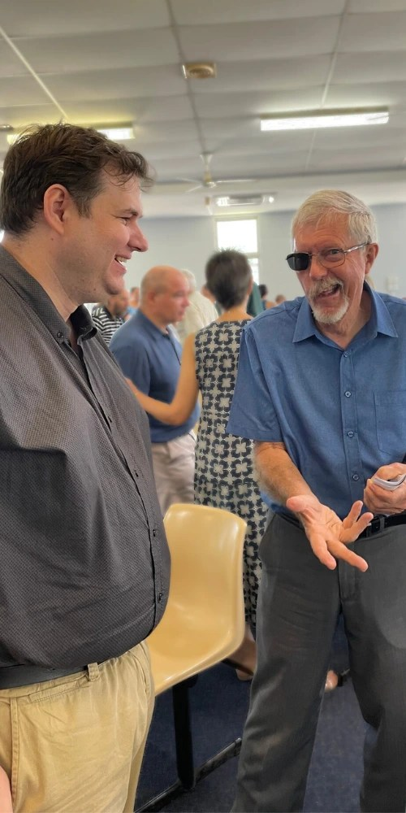

Come along exactly as you are.
Whatever your background, you’re welcome with us. Whether you’re skeptical, interested in Jesus, or already a Christian, we’d love to meet you this Sunday.
Every Sunday our church gathers to pray together, hear from God’s word, sing praises and enjoy time together after the service.
What to expect →